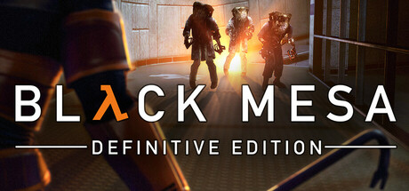
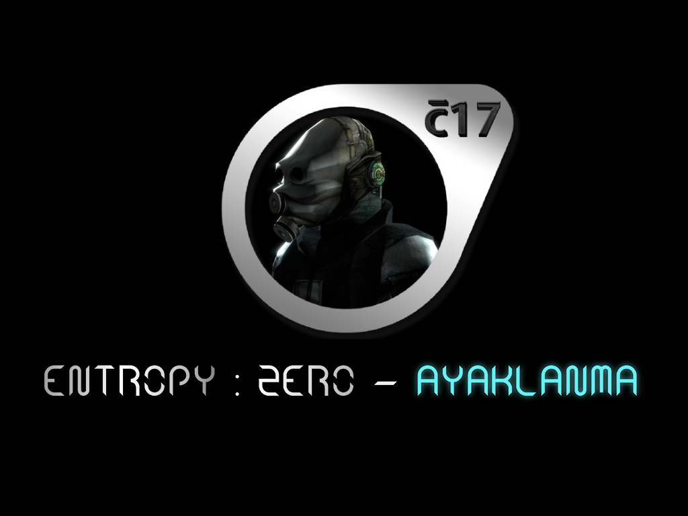
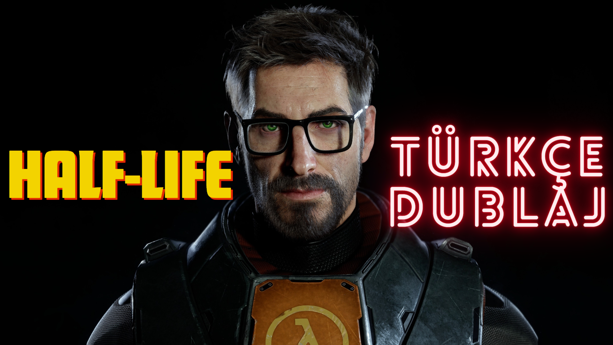
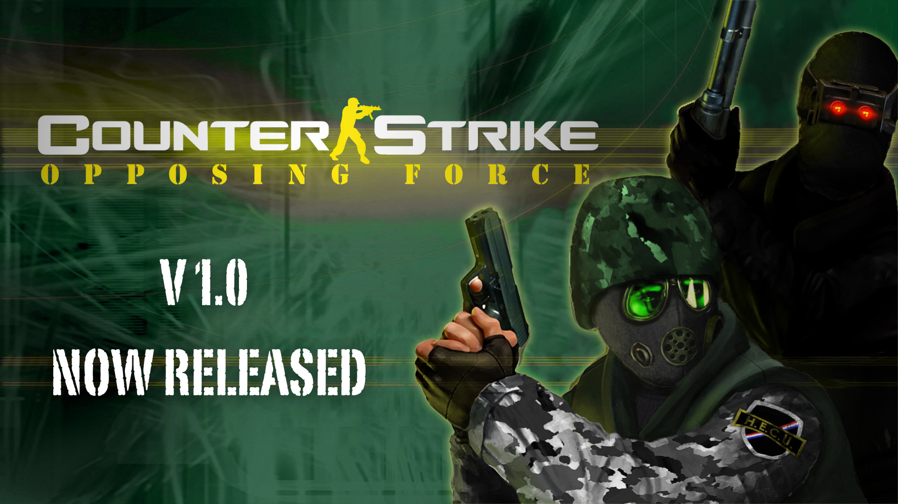
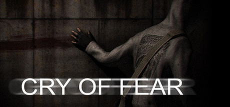
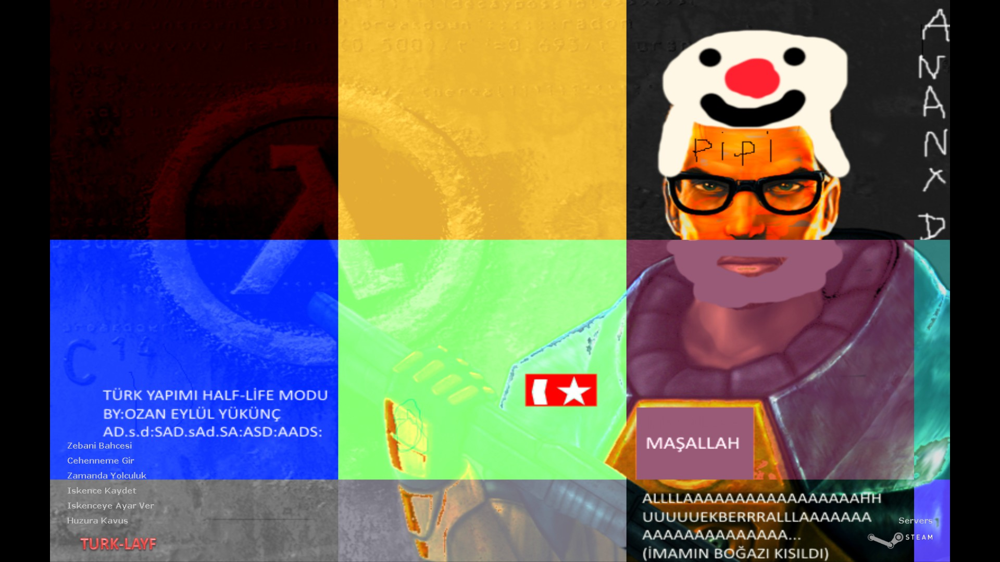
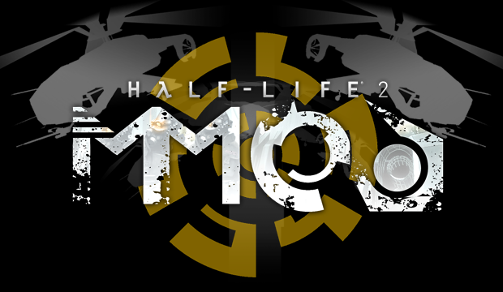

Topluluk Yapımları
Half-Life Serisi Üzerine yapılmış bazı topluluk eserleri!

Black Mesa
Orijinal Half-Life oyununun Source motoru ile tamamen baştan yapılmış, modern grafiklere ve genişletilmiş Xen bölümlerine sahip efsanevi hali.
Steam Sayfasına Git
Entropy Zero Ayaklanma
Entropy: Zero - Ayaklanma, bir Entropy: Zero Uprising modifikasyonudur. Bu modda Türkçe dublaj, Türkçe altyazı, Türkçe oyun içi yamalar, daha iyi silah modelleri ve animasyonları, özel ses tasarımları ve daha birçok şey mevcuttur. Modla ilgili tüm detaylı bilgilere ve açıklamalara Half-Life Türkiye Discord sunucusu üzerinden ulaşabilirsiniz.
Moddb Sayfasına Git
Half-Life Türkçe Dublaj
Half-Life deneyimini Tamamen Türkçe Yaşamak için Bir Fırsat. Westheia Records sunar.
Moddb Sayfasına Git
Counter-Strike Opposing Force
Counter-Strike Condition Zero için Half-Life Opposing Force Temalı bir mod.
Gamebanana Sayfasına Git
Entropy Zero
Half-Life 2: Episode 2 için hazırlanan bu modifikasyonda kötü adam olun ve terk edilmiş Şehir 10'da ölüme terk edilmiş bir Metrocop'un yerine geçin.
Steam Sayfasına Git
Grey
Grey'in hayatı sürekli bir mücadeleden ibaret. Sürekli bir düşüş sarmalında ve görünüşe göre gerçeklik bile ona karşı dönmüş. Grey uyandığında dünyanın sessizleştiğini, sokakların boş olduğunu görüyor. Yardım bulmalısınız. Grey'in yaşadığı kasvetli dünyayı, tamamen yeni ve benzersiz bir dünyada keşfedin ve paramparça olmuş geçmişine dair ipuçları bulun.
Moddb Sayfasına Git
Afraid of Monsters
Adınız David Leatherhoff ve garip bir uyu-turucuya bağımlısınız. Son zamanlarda en derin ve karanlık korkularınızı kemiren yanılsamalar ve rüyalar görmeye başladınız. Sonunda yardım aramak için Markland Hastanesi'ne gidiyorsunuz.
Moddb Sayfasına GitHalf-Life Echoes
Echoes, Black Mesa Araştırma Tesisi'nden ismi açıklanmayan bir bilim insanının bakış açısından oynanır.
Moddb Sayfasına Git
Cry of Fear
Cry of Fear, korkunç yaratıklarla ve kabus gibi sanrılarla dolu ıssız bir kasabada geçen, psikolojik bir tek oyunculu ve işbirlikçi korku oyunudur. Oyunda, soğuk İskandinav gecesinde çaresizce cevaplar arayan, yavaş yavaş deliliğe doğru sürüklenirken şehirde yolunu bulan genç bir adamı canlandırıyorsunuz.
Steam Sayfasına Git
Turk-Layf
Turk-Layf, Ozan Eylül Yükünç'ün yaptığı bir Türk Half-Life modudur. Bu mod Türklere hitap eden şeyler içerir, Türk küfürleri, gelenkleri, şakaları ve internet fenomenleri gibi. Oyundaki zorluklar, yaratıkların hızları, canları, verdiği hasarlar ve modeller, sesler ortalama olacak kadar değiştirilmiştir.
Moddb Sayfasına Git
Half-Life 2 : MMod
Half-Life 2: MMod'un amacı, oyuncuya daha fazla seçenek ve savaş fırsatı sunarak, silah kullanımını, savaş mekaniklerini ve sürükleyicilik faktörünü geliştirmek,genişletmek, iyileştirmektir.
Moddb Sayfasına Git
Half-Life : MMod
Half-Life için ücretsiz, hayran yapımı bir modifikasyondur ve oyuncunun cephaneliğini geliştirmeyi ve savaş seçeneklerini daha da genişletmeyi amaçlamaktadır.
Steam Sayfasına Git